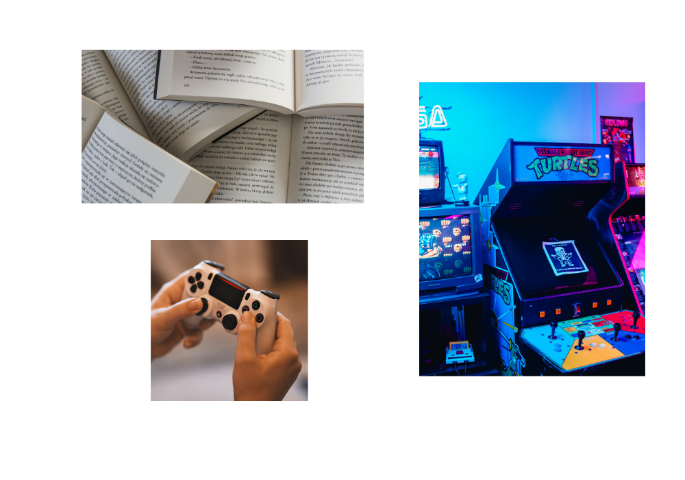

Наведіть мишкою на картинку для підказки або натисніть для переходу до опису:

Багато хто з моїх друзів полюбляє занурюватися у читання художніх та наукових книг у вільний час. Ми часто ділимося враженнями від прочитаного та радимо один одному цікаві історії.
Спільні ігрові сесії - це чудовий спосіб відпочити після навчання. Ми любимо проходити сюжетні ігри, грати в кооперативні режими та обговорювати ігрові новинки.
Класичні ігри та атмосфера ретро-аркад об'єднують тих, хто цінує історію ігрової індустрії, динамічний геймплей та випробування на швидкість реакції.